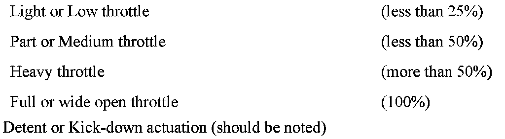

A/T Controls - Adaptations and Terminology
SI B 24 11 07Automatic Transmission
April 2007
Technical Service
SUBJECT
GM6 - 6L46R Transmission Adaptations and Terminology
MODEL
E83 with GM6 transmission from 9/2006
E90, E91, E92, E93 with GM6 transmission from 9/2006
SITUATION
After any EGS reprogramming, transmission or TEHCM replacement, the transmission adaptation values will need to be re-learned. The EGS electronics constantly learns and adapts its control of the transmission to achieve optimum shift quality, durability, performance and fuel economy.
If the adaptations are cleared, by reprogramming or with a TECHM or transmission replacement, the customer may notice a change in transmission behavior until the various adaptations are sufficiently relearned.
The following information should be used when evaluating any customer complaint relating to shift quality and other transmission performance problems. Being able to specifically identify and describe which gears, throttle position, and environmental conditions present when the problem occurs is necessary in order to analyze and determine the cause.
The following list of terminology is used within BMW and the resident GM specialists and will help when describing any problems and to gain a better understanding of shift strategies. This terminology should be used whenever describing a transmission related problem in a PuMA case.
The following transmission adaptation procedures are only meant to be a guideline to help optimize the time and operations required for troubleshooting a shift quality complaint and to explain the different gear adaptations that are learned and under which driving conditions.
The adaptation learning procedures should only be performed in an area where traffic will allow the steps to be performed in a safe and legal manner.
INFORMATION
1. Garage Shifts:
A forward or reverse gear engagement by moving the shift selector lever from Park or Neutral positions to R, D, or DS positions. It is done at a standstill or at a very low speed ("rolling" garage shift).
2. Power On situation:
The engine pulls the vehicle and the engine delivers positive torque output, usually with throttle pedal input. This definition can apply to a shift (up or down) as well as a steady state where no gear changes are occurring.
3. Power Off or Coast situation:
The vehicle pushes the engine and the engine delivers a negative torque output, usually with a zero throttle pedal position. This definition can also apply to a shift (up or down) as well as a steady state where no gear changes are occurring.
4. Engine Braking effect:
The coast situation can also be considered as an engine braking mode in gears 2, 3, 4, 5 and 6 since the GM6 clutching has braking capacity in these gears. Gear 1 only provides engine braking in Steptronic position M1.
The acceleration of the vehicle may be positive or negative in any of the above situations, depending on the vehicle moving resistance which is defined by physical parameters such as: road gradient, weight, and environment for example.
There can also be a situation where the vehicle can be in between Power On and Coast state, when the engine torque is transitioning or stabilizing between these two states.
5. Upshifts:
All shifts from a lower gear to a higher gear noticeable by a drop in engine speed on the tachometer. Any upshift description should mention the previous and next gears as well as the throttle pedal information (initial position and movement type if any).
If the throttle position is zero (closed) the upshift is called a coast upshift.

6. Throttle pedal positions as shown.
7. Throttle pedal movements:
Throttle lift or back off: a sudden throttle position reduction to a lower or a zero position (should be noted).
Throttle step in or tip in: a sudden throttle position increase to a deeper position Throttle lift and step in can be performed in a short sequence (should be noted).
8. Downshifts:
Shifts from a higher to a lower gear, noticeable by an engine speed increase on the tachometer. Any downshift description should mention the previous and next gears, as well as vehicle speed, throttle pedal position and the movement type.
If the throttle position is zero (closed) the downshift is called a coast downshift.
If the throttle position is positive (open) the downshift is called a power-on downshift.
9. Power On downshifts (PD):
In an automatic driving mode (D or DS selector lever position), the power on downshifts are initiated by a throttle pedal tip in. This is the most common downshift situation.
In a "Steptronic" driving mode, the power on downshifts can also be manually performed by a selector tap down (to be specified as tap shifts).
10. Single step power on downshifts:
These shifts are "1 or 2 gears" shifts (6-5, 6-4, 5-4, 5-3, 4-3, 4-2, 3-2, 3-1, 2-1). They are performed individually or can be stacked in a large sequence, caused by a gradual throttle pedal movement.
11. Multiple steps power on downshifts (also called "skip and sync" shifts):
These shifts are the same "1 or 2 gears" shifts, but performed in a short sequence by a fairly quick throttle pedal movement. The result is a double or triple step downshift where the previous shift is skipped by the next shift.
Examples: 6-5-4, 6-5-4-3, 6-5-3 or 6-4-3, 5-4-3, 5-4-3-2, 5-4-2 or 5-3-2, 4-3-2, 3-2-1.
12. Multiple direct power on downshifts (also called "skip via neutral" shifts):
These shifts are "3 or 4 gears" shifts but felt as a one large step (6-3, 6-2, 5-2). They are performed by a very quick throttle pedal movement, mostly from a low or zero throttle position to the kick-down position.
13. Coast downshifts (CT):
In an automatic driving mode (D or DS selector lever position), the coast downshifts occur in a row during "rolling out" or "coasting down" with a closed throttle (CT) until stop under light, moderate or heavy braking condition.
In a "Steptronic" driving mode, pre-selected coast downshifts can be manually commanded by a selector tap down in Steptronic driving mode (called tap shifts). These shifts are mainly performed in order to provide braking assistance using the engine braking effect.
14. Mechatronic (or VB-TEHCM asm)
^ Definition of the assembly of the 2 following parts:
^ TEHCM : GM6 - 6L45R Transmission Electro-Hydraulic Control Module
^ Valve Body Assembly
GM6 Transmission Adaptation Procedures:
Do not use the transmission adaptation test module in DIS under the Service Functions menu as prompted by Progman. It currently does not function correctly and may cause faults to be set.
Most of the upshift, coast downshift, and garage shift adaptations will quickly take place during normal driving based upon individual driving style. The less frequent shifts, esp. the multiple step downshifts, may feel unfavorable until a certain level of adaptation has been learned.
The comprehensive procedures listed below are just a guideline of the driving styles which can be used to adapt the transmission for optimum shift performance and comfort or to duplicate a shift quality complaint. The GT1 is recommended for diagnostic status requests of gears, throttle pedal position, and transmission temperature during troubleshooting.
The adaptation process begins when the transmission temperature is higher than 40deg;C.
Each procedure may require repeating several times to store an effective baseline value. It is important to try and isolate each shift when performing each step in a given procedure.
The adaptation learning is a continuous monitoring of various input variables with modulated hydraulic changes made, as needed to match specified operational program parameters.
Garage Shifts and Neutral Idle performed during warm-up and again when hot:
N to R position: perform with the brake applied.
N to DS position: perform with the brake applied (do not stop in the D position).
N to D position: Hold the D position for 15 seconds with the brake applied and release the brake without throttle (neutral idle learning).
D to R position and R to D position in a row: with the brake released (rolling garage shifts, and about 2 seconds between the shifts)
Upshifts during warm up:
From 1st to 6th gear:
Perform 1-2, 2-3, 3-4 upshifts with a medium throttle pedal position (between 30% and 50%).
Coast downshifts (with CT = closed throttle):
From 6th to 1st gear:
After every upshift series (see above) do a coast down (vehicle slowing to a full stop) using only light to moderate braking.
Further upshift and downshift adaptation maneuvers should also be followed by coast downs to a full stop help to balance this adaptation.
Single step power on downshifts:
Perform all the following shifts by stepping into the throttle gradually in order to get the downshifts spaced one after another.
Perform the following shifts in 2 different manners, i.e.
1. A medium throttle movement in middle speed range of initial gear.
2. Also by doing a quick throttle tip-in at the low end of speed range of initial gear (see below).
At medium speeds & medium throttle movement:
Perform 6-5, 6-4, 5-4, 5-3, 4-3, 4-2, 3-2, 2-1, 2-1 (engine speed between 2000 rpm and 4000 rpm at start of the shift)
At low speeds & quick throttle movement:
Perform 6-5, 6-4, 5-4, 5-3, 4-3, 4-2, 3-2 (engine speed between 1400 rpm and 1800 rpm at the start of the shift),
Multiple direct power on downshifts:
Perform the following shifts by doing a very quick throttle tip-in, actuating the Kick-Down.
6-3, 6-2, 5-2
Garage Shifts when hot:
The same procedure as during warm-up (see above).
Upshifts when hot: From 1st to 6th gear:
Perform 1-2, 2-3, 3-4 upshifts with a low throttle pedal position (between 10% and 20%).
From 1st to 6th gear:
Perform 1-2, 2-3, 3-4 upshifts with a part throttle pedal position (between 30% and 40%).
From 1st to 5th gear:
Perform 1-2, 2-3, 3-4 upshifts with a heavy throttle pedal position (between 50% and 60%).
From 1st to 4th gear:
Perform 1-2, 2-3, 3-4 upshifts at wide open throttle pedal position (100% or KD).
Reminder: Coast downshifts:
From 6th to 1st gear:
After every upshift series, as before, do a coast down (vehicle slowing to a full stop) using only light to moderate braking.
Multiple steps power on downshifts:
Perform each of the following shifts by doing a "fairly quick" throttle tip-in, in order to get several downshifts in a row (shortly sequenced).
6-5-3 or 6-4-3 and try a 6-5-4-3;
5-4-3 and try a 5-4-3-2KD;
5-3-2 or 5-4-2 and 4-3-2 and 3-2-1
WARRANTY INFORMATION
Information only

Disclaimer